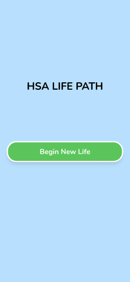
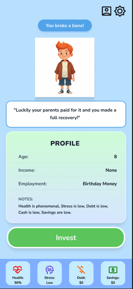
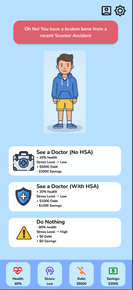

61.2%
reported they don’t know what an HSA is
Undergraduate Research + Design Project
An early-stage undergraduate research and design project exploring how interactive gameplay can improve HSA understanding among college students.
This site documents the problem, preliminary findings, design process, and a prototype pitch for an educational game focused on Health Savings Accounts (HSAs).
High-fidelity clickable prototype alongside low-fidelity wireframes (to show design evolution).
If the embed doesn’t load, use the Figma link below (permissions can affect embeds).



HSAs can be confusing—especially for students navigating insurance terms, tradeoffs, and first-time benefits decisions.
Health Savings Accounts (HSAs) are often presented alongside plan selection and employer benefits, but many undergraduates have limited exposure to healthcare financing and related terminology. This can reduce confidence and lead to missed opportunities to learn how HSAs work in practice.
Preliminary survey of 26 undergraduate students.
Explore whether a lightweight, scenario-based learning game can improve familiarity with HSA concepts through repeated decision-making and feedback.
Preliminary results from an early-stage undergraduate survey exploring HSA awareness, adoption, and interest in a game-based learning approach.
A simple research-to-prototype workflow used to translate findings into concrete interaction decisions.
Identify student confusion points and baseline familiarity with HSAs.
Translate findings into problem statements, learning goals, and constraints.
Create a clickable prototype showing the flow, core screens, and feedback loops. Shown below
Refine UI and game logic based on usability observations and feedback.
| 1st survey round (n = 26) | Design decision |
|---|---|
| Many students don’t know what an HSA is | Tutorial level + glossary tooltips |
| Most students don’t have an HSA | Scenarios based on first job / benefits enrollment |
| Reasons for not having HSA was mainly lack of resources and understanding | include informative tips on how HSA can benfit you in the game |
| Students describe healthcare costs as Anxious, confusing, annoying. | Include explanations on healthcare costs and their impact on financial planning. |
| Students describe the ideal expereince would be not too long, about 10 minutes | Adjust length of gaming accordingly |
| Students describe design as childish and not aesthetically pleasing | Change the color scheme and overall design aesthetic |
| 2st survey round (n = 10) | Design decision |
|---|---|
| Majority of the students said they would play the game after looking at our initial designs | Build prototype |
| Majority of students said they would feel more knowledgeable about the benefits of an HSA after playing | No new changes needed continue with original requirements |
| Students proposed idea of including different college personas | Create different student profiles with different backgrounds and scenarios |
| Some students said the idea of having free option to invest in stock was too complicated | Create different multiple choice options for user to pick so its easy for them to decide |
| Some students said wanted to be able to have a tracker that compares how you are doing with and without a HSA so you can see the difference | Create a tracker that records users progress and compares it with and without a HSA |
| 3st survey round (n = 6) | Design decision |
|---|---|
| Majority of the students said they think the theme of the website is dull, hard to navigate, and too much text | Color change the website, deleting uncessary text, navigation car overhaul |
| Majority of students said they were confused on the terminology | No new changes |
| Students proposed showcasing the game first | Moved game to the top |
A scenario-based learning game that uses decisions and feedback to teach HSA concepts in context.
Players make scenario-based decisions involving budgeting, simulated healthcare events, and plan tradeoffs. The game provides visual feedback on HSA balance and out-of-pocket costs to show the consequences of choices over time.
Planned work to strengthen the research basis and improve the prototype quality.